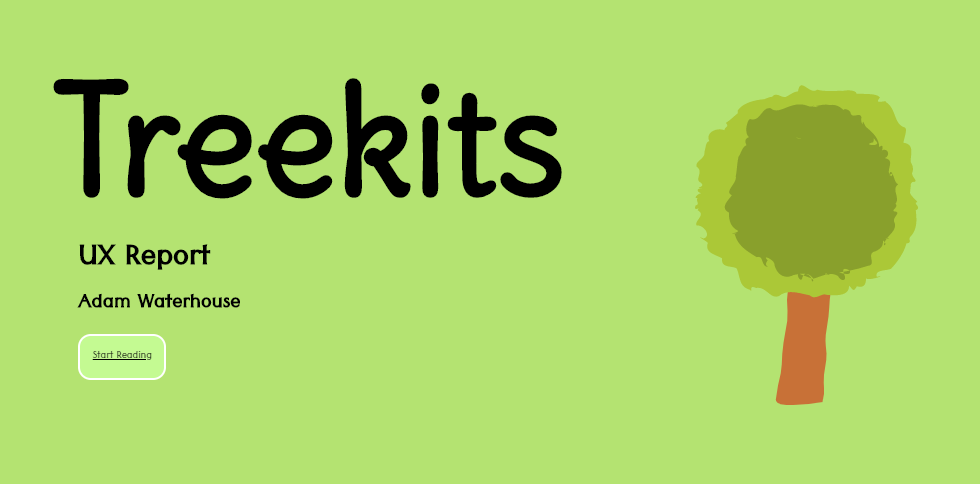

Published: 23/03/2020
Why This Project?
The list of tasks that CSS can do is growing (Liew, 2018), tasks that previously relied on Java Script are becoming part of the extensive range of CSS properties, making potential scripting issues a thing of the past and websites load even quicker (Amberweinberg, 2016). However, what are the limits of CSS, and specifically CSS animations? I wanted to explore these limits and see if I could transform my UX report made in PowerPoint into an accessible, responsive and engaging piece of web content using pure CSS. I’ve been doing a lot of research recently about the UX of my own portfolio (Doody, 2018), and realised that having a UX portfolio in .pdf and .pptx formats are a huge usability and accessibility issue. I approached this project with an open mind but a very limited knowledge around CSS animations and its full capabilities.
View my CSS Animations Presentation
The Set Up
Before a single line of CSS was typed, I needed to make my report web based. This meant marking up all the content in the presentation semantically in HTML, to ensure that before anything else that it was accessible (Keith and Andrew, 2015), responsive and usable with just the HTML.
Turning off #CSS is the quickest way to see if something is basically accessible.
— Heydon (@heydonworks) March 2, 2018
User agent styles / visual hierarchy? ✔️ semantic markup
Reads logically? ✔️ Good source order
Images still there? ✔️ <img> tags used, not backgrounds
This content first approach using HTML (Cardello, 2017:online) was the ‘foundation of the design’, and enabled me to create a design that fitted the content.
What is Animate.CSS?
When it came to the animations I was inspired by the work of Danial Eden, a Lead Designer at Facebook and his work on Animate.CSS. Dan used keyframe CSS animations to create the easy to use animation library, where once installed locally or linked to the CDN, users can simply state the class name of an animation and assign it to a HTML attribute.
See the Pen abOGGde by agwaterhouse (@agwaterhouse) on CodePen.
Timelines
To create a timeline effect where different elements come in at different times, I was able to use the delay class that comes built into the Animate.CSS library. This allowed me to create a very similar experience to a PowerPoint presentation, where different elements could come in one after another.
See the Pen Animations one by one by agwaterhouse (@agwaterhouse) on CodePen.
However, unlike PowerPoint or other presentation software, you can’t control the timeline of the animations through the users clicks or keyboard inputs, to dictate a different animation coming in or out. However, I discovered that through the use of Java Script you can assign animations to different elements once an action has been completed, such as the user clicking or pressing the keyboard (W3 Schools, no date).
See the Pen Animation on Click by agwaterhouse (@agwaterhouse) on CodePen.
Adding Multiple Animations To One Element
Using Animate.CSS presented challenges when attempting to assign more than one animation to an element, such as an <img> tag. I wanted to make the tree image I use on the title page, appear from the bottom of the screen and then also shake after it had animated in. When attempting this using animation delays, only the last animation played.
See the Pen Only one animation plays by agwaterhouse (@agwaterhouse) on CodePen.
Research revealed no documentation or articles about attempting to do this. Through trial and error, I was able to complete this through containing the <img> tag I wanted to animate inside another <div> container. Through adding animations to both separate elements and using the delays, I was able to add multiple animations to the same image one after another.
See the Pen Animated Tree by agwaterhouse (@agwaterhouse) on CodePen.
Adapting and Customising the Animations
One of the first issues I had with using the Animate.CSS library was customising the animations for my content. Using just the Animate.CSS library I was restricted as I only had a limited amount of control over the way the animations behaved.
I went with this problem to the monthly Code UP Manchester event held at Code Computer Love, a member of the BBC Software Development team introduced me to the idea of combining key frame animations with the Animate.CSS library. This allowed me to create multiple steps in my animations (Coyier, 2016) and customise them, for example I was able to alter the SlideOutDown Animation so that it didn’t just move down on the screen, but so that the opacity also faded to 0.
Original Animation:
See the Pen Not Customised Animation by agwaterhouse (@agwaterhouse) on CodePen.
Customised Animation:
See the Pen Customised Animation by agwaterhouse (@agwaterhouse) on CodePen.
Creating a Hover Effect Using Animate.CSS
I wanted to use Animate.CSS to also create hover effects on elements such as buttons. I first attempted to do this using the animation play status property, to set the animation to play on hover and pause otherwise. However, this led to the animation not stopping when the user hovered over the element.
See the Pen The Run Away Button by agwaterhouse (@agwaterhouse) on CodePen.
Through storing Animate.CSS animations locally I was able to dictate the number of repetitions and the duration of the animation in my local CSS. This created a much smoother effect.
See the Pen Wobbling button by agwaterhouse (@agwaterhouse) on CodePen.
However, when testing this animation on mobile, I noticed that the animation was cut off. As mobile users can't hover, the animation only starts to play once the user has clicked a link. The ‘Wobble’ animation that I attempted to use on my buttons could have also made users feel nauseous or dizzy due to the nature of the animation (Featherstone, 2014). I therefore opted to use the ‘Pulse’ animation, which has significantly reduced motion and is therefore more appropriate for users with Vestibular issues and also mobile users.
See the Pen Pulse Button by agwaterhouse (@agwaterhouse) on CodePen.
So, is CSS All You Need?
In short, no. CSS can actually provide more control than traditional presentation software, such as how you can manipulate the smoothness of individual animations. However, CSS is still designed predominately just for layout (HostPresto, 2013), and is not designed for the interactivity that Java Script provides.
However, by combining CSS and Java Script it would become possible to almost replicate presentation software exactly. Through adding .addEventListener to my code base, the Animate.CSS animations could be added to a class, so that they animate out of the page once a button is clicked to go on to the next screen.
A Java Script animation library such as GreenSock could have also been appropriate for this project, as it allows users to create animation timelines (Virtous, 2015). GreenSock animations often also load even quicker than CSS animations and include multiple libraries, giving the developer even more control over the different type of animations (Doevelaar ,2016). This could have been useful for providing both page transitions and also the animation of individual elements onto the page.
In conclusion, CSS can be used to replicate presentations, however it was never designed for this, and even as the list of CSS properties grows, I do not believe that it well ever offer the level of interactivity that Java Script provides.
References
- Amberweinberg. (2016) Replacing Js Functionality With Css Properties. 15th April. [Online] [Accessed on 15th January 2020] https://www.amberweinberg.com/replacing-js-functionality-with-css-properties/
- Cardello, J. (2017) The modern web design process: putting content first. 5th September. Web Flow Blog. [Online] [Accessed on 5th January 2020] https://webflow.com/blog/the-modern-web-design-process-putting-content-first
- Coyier, C. (2016) Keyframe Animation Syntax. 19th September. CSS-Tricks. [Online] [Accessed on 3rd December 2019] https://css-tricks.com/snippets/css/keyframe-animation-syntax/
- Doevelaar, E. (2016) 10 Benefits of animating with GreenSock. 12th August. LinkedIn. [Online] [Accessed 4th March 2020] https://www.linkedin.com/pulse/10-benefits-animating-greensock-elke-doevelaar
- Doody, S. (2018) How to improve the UX of your UX portfolio. 16th May. Inside Design. [Online] [Accessed on 4th January 2020] https://www.invisionapp.com/inside-design/improve-ux-portfolio/
- Featherstone, D. (2014) Balance Awareness Week: iOS8 & vestibular disorders. 30th September. Simple Accessible. [Online] [Accessed on 21st January 2020] https://simplyaccessible.com/article/balance-awareness/
- HostPresto. (2013) What Is CSS’s Role In Web Design? [Online] [Accessed on 12th February 2020] https://hostpresto.com/articles/css-role-in-web-design/
- Keith, J., Andrew, R. (2015) HTML 5 For Web Designers. 2nd ed., New York: A Book Apart.
- Liew, Z. (2018) New CSS Features That Are Changing Web Design. 7th May. Smashing Magazine. [Online] [Accessed on 4th January 2020] https://www.smashingmagazine.com/2018/05/future-of-web-design/
- Virtous. (2015) Creating new timeline objects. 13th February. GreenSock. [Online] [Accessed on 4th March 2020] https://greensock.com/forums/topic/11328-creating-new-timeline-objects/
- W3 Schools. (no date) How To – Add a Class. [Online] [Accessed on 12th February 2020] https://www.w3schools.com/howto/howto_js_add_class.asp